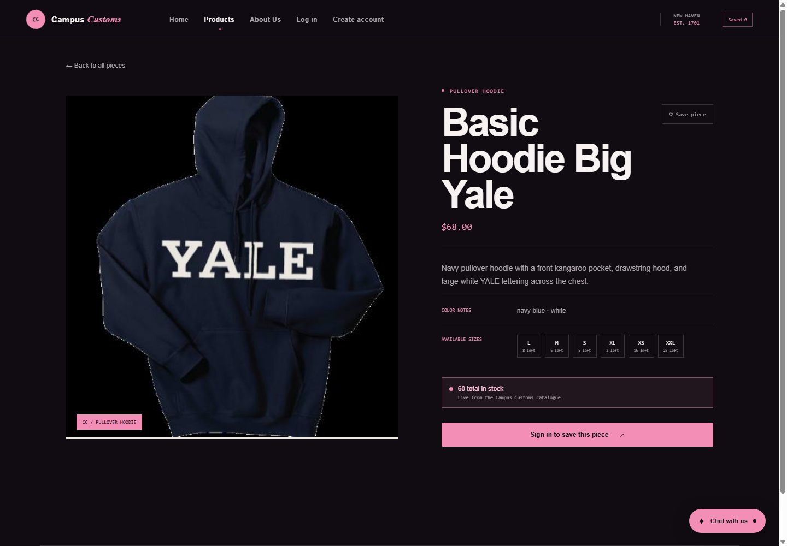
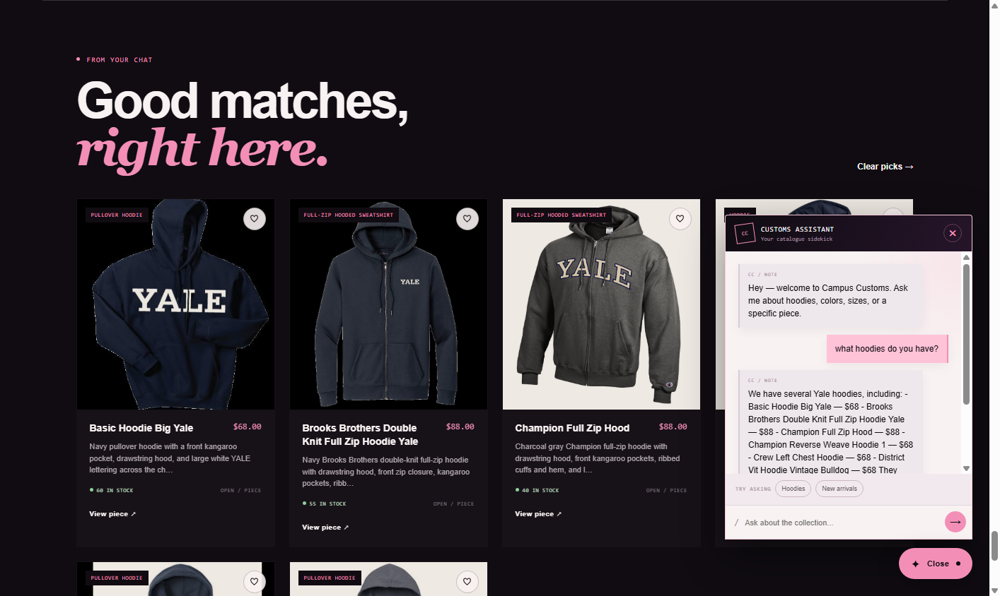
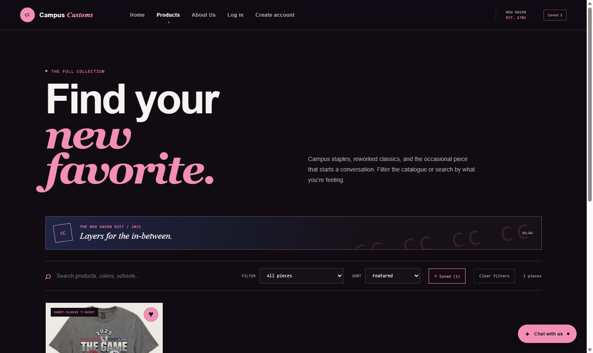

Rendered checks captured from the local Vite front end while the FastAPI service was running against the Campus Customs SQLite catalogue.
1. Inventory and price check

What this proves: The single-item page reports the database-backed price of $68.00, size-level quantities (including 15 XS and 25 XXL), and a live total of 60 in stock for Basic Hoodie Big Yale.
2. Dynamic search results from chat

What this proves: After the shopper asks "what hoodies do you have?", the agent reply is visible in the chat panel and the "Good matches, right here" tray renders six structured hoodie product cards with images, names, prices, descriptions, and stock.
3. Problem 9 usability feature: saved pieces

What this proves: The saved-piece heart and Saved filter work together: the header shows Saved 1, the toolbar shows Saved (1) and Clear filters, and the catalogue is reduced to the one saved piece.